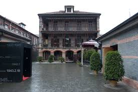

Top 3 Historic Sites in Shanghai
Longhua Temple

Introduction
Longhua Temple, founded in 242 AD during the Three Kingdoms period, is Shanghai’s oldest and largest Buddhist temple. With a history of over 1,700 years, it’s a peaceful oasis in the busy Xuhui District. The temple follows the traditional Chinese Buddhist temple layout: a central axis with four main halls—Maitreya Hall (with a smiling Maitreya Buddha statue), Heavenly Kings Hall (housing four Heavenly Kings statues), Main Hall (with a 19.2-meter-tall Sakyamuni Buddha statue), and Sutra Library (storing ancient Buddhist scriptures).Behind the temple is the Longhua Pagoda, a 40.6-meter-tall seven-story pagoda built in 977 AD. Though visitors can’t climb the pagoda, its red wooden structure and green tiles are a beautiful example of Song Dynasty architecture. Every year during Lunar New Year, the temple hosts a “Longhua Temple Fair” with traditional performances, food stalls, and incense offerings—locals come to pray for good luck.
Best Time to Visit
Morning (6:30 AM–9 AM): Quiet, with fresh incense in the air—ideal for meditation or photography.
Lunar New Year (January–February): Temple fair with lively performances, but crowded.
Price
Longhua Temple: 10 CNY/adult; 5 CNY/students; free for kids under 1.3 meters.
Longhua Pagoda Viewing: Free (no entry inside the pagoda).
Shanghai Jewish Refugees Museum

Introduction
The Shanghai Jewish Refugees Museum tells a powerful story of compassion: during World War II (1933–1941), Shanghai welcomed over 20,000 Jewish refugees fleeing Nazi persecution—one of the only places in the world that didn’t require a visa. The museum is located in the former Ohel Moishe Synagogue (built in 1927), a small white building with a blue Star of David on its roof.Exhibits include personal stories of refugees (letters, photos, and diaries), historical documents (visa applications, newspaper clippings), and replicas of the small apartments where refugees lived. The “Memory Wall” outside the museum lists the names of over 13,000 Jewish refugees who lived in Shanghai—walking along it is a moving reminder of the city’s role in saving lives.
Best Time to Visit
Year-round: The museum is indoors (20°C–25°C) and open daily except Monday.
Weekdays: Quieter than weekends—better for focusing on the exhibits.
Price
Entry Fee: 20 CNY/adult; 10 CNY/students; free for kids under 1.3 meters.
Guided Tour: Free (included in entry fee).
Xintiandi

Introduction
Xintiandi is a historic district that blends Shanghai’s “shikumen” (stone-gate) architecture with modern luxury. Shikumen houses—built in the late 19th century—are a unique mix of Chinese courtyard houses and Western townhouses, with red brick walls, stone gates, and small gardens. Xintiandi has restored over 50 shikumen buildings, transforming them into high-end restaurants, cafes, boutiques, and art galleries.Walking through Xintiandi’s lanes feels like stepping back in time: the red brick walls are covered in ivy, and the stone gates still have their original carvings. But inside the buildings, you’ll find modern touches—like rooftop bars with skyline views and Michelin-starred restaurants serving fusion cuisine. It’s a perfect example of how Shanghai preserves its history while embracing modernity.
Best Time to Visit
Spring (March–April): Cherry blossoms bloom in Xintiandi’s small parks, 10°C–18°C.
Night (6 PM–10 PM): Lanes are beautifully lit, and the atmosphere is lively but not crowded.
Price
Xintiandi District: Free entry (restaurants, cafes, and shops have individual prices).
Shikumen Open House: Some restored shikumen buildings are open for tours (30 CNY/adult) to see inside a traditional home.